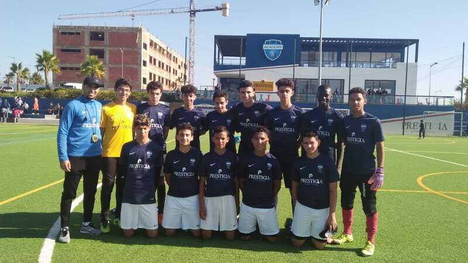
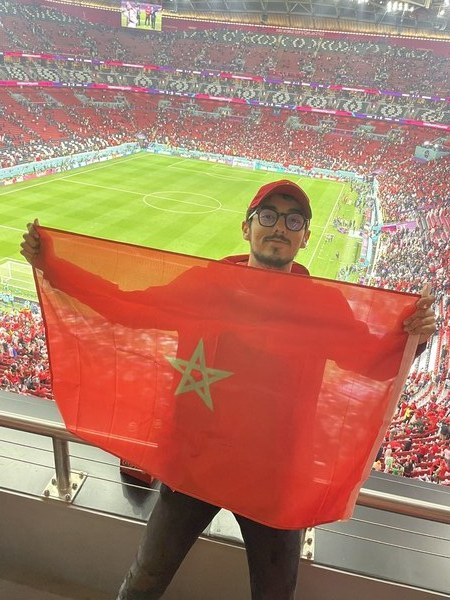
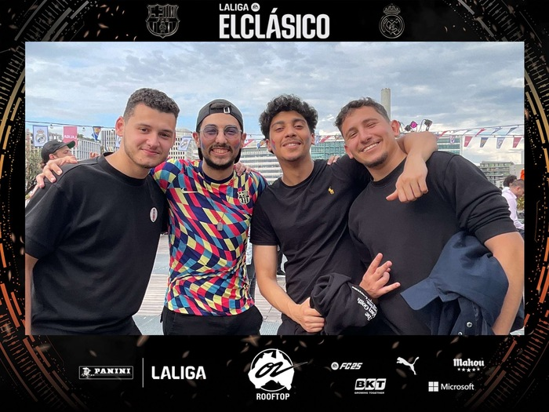

Born with
a ball.
Not because it was trendy. Because the philosophy, the history, the way they play football the right way. That is everything I believe in. Xavi, Iniesta, Messi. A six-year-old Moroccan kid watching something he would never forget.
6 years on the pitch, training at the PSG Academy Morocco and playing for FUS Rabat. That grind taught me discipline, how to read the game, and what separates good players from great ones. The pitch is where you learn what no classroom can teach.

Started as a group chat. Became 12 videos. Sqrew Football — no brief, no sponsors, just actual analysis. UCL breakdowns. Tactical deep dives. We called 7 of 8 group stage predictions in 2020-21. Then life moved on. The instinct to explain the game never did.
Morocco at a World Cup semi-final. The first African and Arab nation to reach the final four. I was there in spirit, every minute of it. The run that changed everything. If you know, you know.

When El Clasico comes to Paris, you do not miss it. The crowd, the atmosphere, the football talk that never stops. This is what happens when football obsession meets opportunity.

Studying data and finance at Albert School. Bringing that lens to sports — because football has never been more quantifiable, and most people still watch it with their eyes closed.